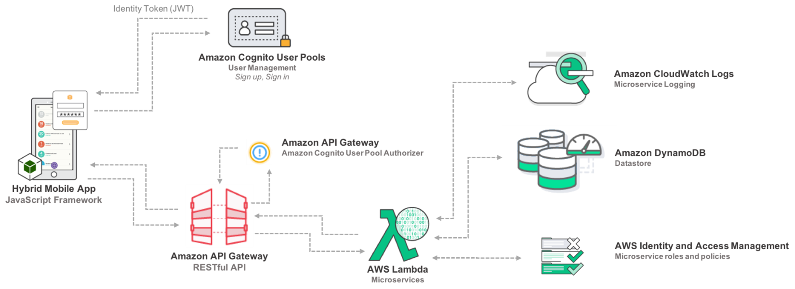
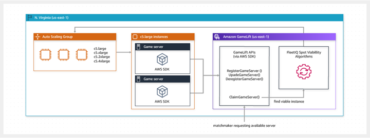
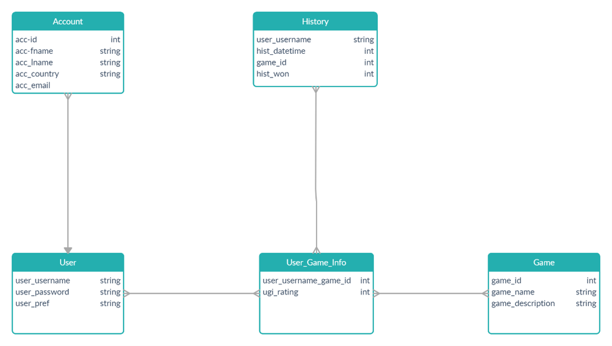

As we review the overall scope of the project, we understand we will have certain limitations to what we can implement within the initial project period up to week 6. As we are looking to develop an application which not only serves the basic functionality of replacing a scorecard in Cluedo, which would be our initial release of version 1. In v1, we aim to be able to provide an experience much more immersive which will incorporate card sharing amongst various other features. As we progress and add additional features to the app, we aim to be able to develop the app in a way which allows incorporation of numerous versions of not only the game Cluedo, but with the intention of being able to deploy for other board games, some of which may be considered Retro; our goal is to revitalise the experience of these games. As we progress through these steps will be able to show potential stakeholders how our app has a market value for a moderate demographic of users.
Initially we will not be able to release a full version of our desired app. We considered using Monaca [1] as our initial development tool, however, after much consideration and review we decided to use Xaramin [2]and the Android SDK studio [3]. As we chose this path to begin our venture, our app will be released first to the Google Play Store [4]leaving an opportunity for the future development for the Apple Store[5]. Although we aim to initially release to Android devices, this provides us with the opportunity to show the usefulness of our app.
After review of feedback given and extensive research into finding a suitable cross platform developer, we have decided to use Microsoft’s Visual Studio version 16.8.1, Android.Sdk.Manager version 4.1.1 & Xamarin version 4.8.0 [1] . With this we will be provided with a single, cross platform API (Application Programming Interface) to develop code to be used across iOS and Android [2] using C# as the language.
Xaramin extends .NET with tools and libraries designed specifically for building apps on iOS & Android. Microsoft’s Visual Studio and Xaramin are free and require no licensing costs. We will use these development tools along with GitHub to opensource and code we may require.
To use this we will need access to a Desktop computer or laptop with access to the internet. As the developer tools we will be using can be used on either Windows or macOS there will be no requirement to use a dedicated operating system.
To use this we will need access to a Desktop computer or laptop with access to the internet. As the developer tools we will be using can be used on either Windows or macOS there will be no requirement to use a dedicated operating system.
To store user information and records we will use Amazon Web Services (AWS) Mobile app Backend [3]to access Amazon Cognito User Pools. This will allow users of the app to sign up and sign in to the application. Here is a diagram from Amazon depicting their cloud database structure.
We will use AWS GameLift to manage the servers and allow interconnectivity of the game. As our app requires interaction between multiple devices in real-time, this is a core component to ensuring the viability of the product. We aim to achieve this by using the Amazon GameLift SDK Version 4.0.2 [4]. Below is a basic database diagram from AWS GameLift.
As we are using a cloud-based solution to store and connect users we do not need any physical hardware to achieve this. We have, however, considered that we will need our own database to store on AWS we designed a very basic data structure of our own. This covers our most necessary information such as user IDs, game IDs, account data, and history.
Our app will go through continuous testing throughout the design and build process. During the build, the app will be debugged and trialled as if it was available on the app store. Our commitment to developing a functional and engaging app needs to be closely reviewed to confirm that we are on the right track. We will be focusing on accessibility, future game compatibility and overall design. We’ll put our app through testing phases: Alpha and Beta. The Alpha phase will be closed off to friends and family and will ideally include users both with and without Cluedo experience, as well as a variety of ages and confidence levels with technology. Doing this we ensure a varied testing pool, and a more inclusive and accessible end product. During testing we have developed our own metrics in addition to taking suggestion from Todd DeCapua, the Executive of JP Morgan who states that “-it is important to gather both front- and back-end metrics. Client-side measures are vital to understanding the front-end user experience.” (DeCapua 2015)
To this end we have this list of metrics to test for:
In-app deduction logic accuracy After our closed Alpha, we’ll be pushing the app into an open Beta, where anyone who has been following our development will be able to download and test it, providing feedback accordingly. When fully released, our feedback will be gained through the number of individual downloads, along with app reviews after people appreciate the uniqueness of the app.